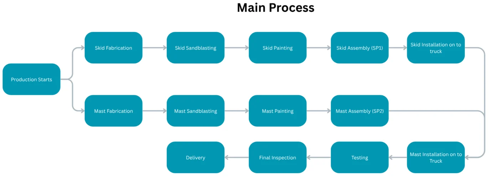
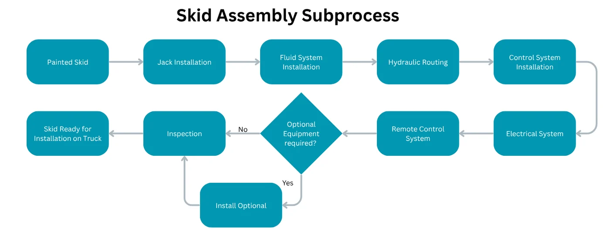
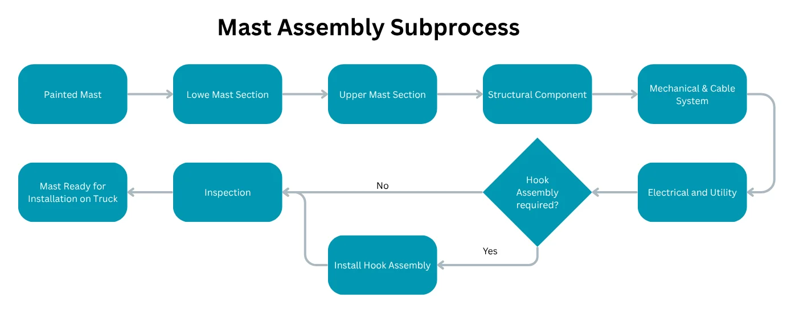
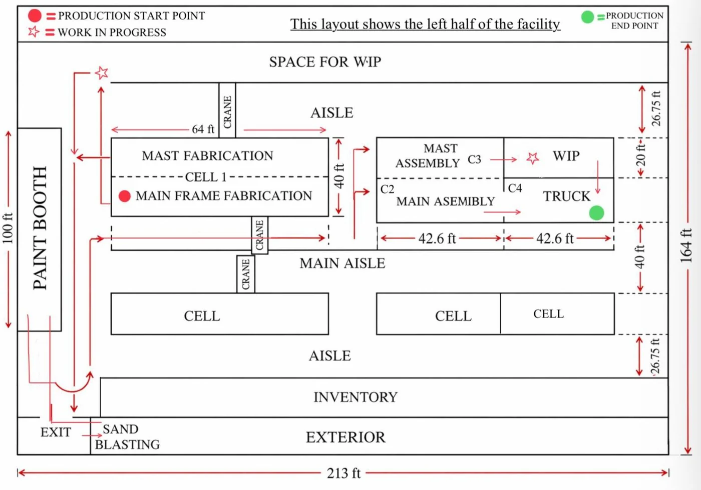
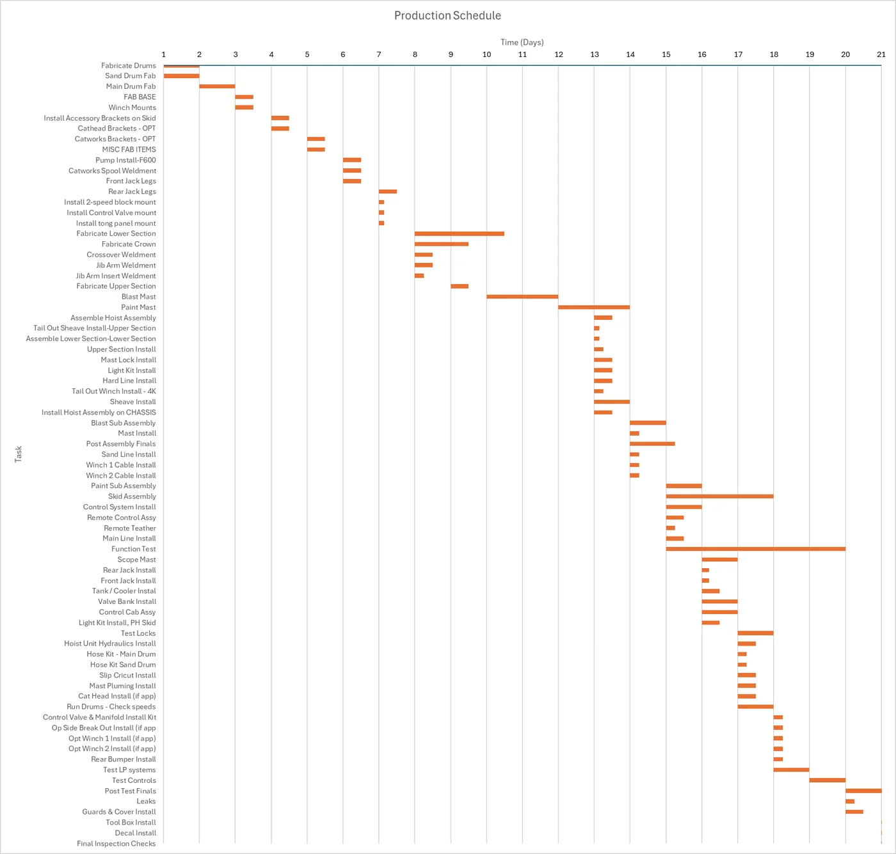

Estimated order-to-shipment delivery lead time before the proposed production and inventory framework.
Industrial Engineering Capstone · May 2026
Titan Pump Hoist Production System & Inventory Planning
This project evaluated Taylor Rig and Equipment LLC’s Titan Pump Hoist production process and developed a production and inventory planning framework to support a 30-working-day production target.

Executive Summary
Two connected problems were addressed: production structure and material availability.
The analysis focused on creating a feasible cell-based production system and a supporting inventory policy framework so production flow and material planning operate together.
Working-day production target established for the Titan Pump Hoist line.
Working days required to complete one Titan unit under the proposed schedule.
Day release interval for introducing a new truck into the production system.
Process Flow
Skid and mast assemblies run in parallel before final truck integration.
The production process begins with fabrication for both skid and mast components, moves through sandblasting and painting, and then separates into assembly paths that converge during final truck installation, testing, inspection, and delivery.
Overall process showing parallel skid and mast fabrication, sandblasting, painting, assembly, truck installation, testing, final inspection, and delivery.

Skid assembly subprocess showing jack installation, fluid system installation, hydraulic routing, control system installation, electrical setup, optional equipment, inspection, and readiness for truck installation.

Mast assembly subprocess showing lower mast assembly, upper mast assembly, structural components, mechanical and cable systems, electrical and utility integration, optional hook assembly, inspection, and readiness for truck installation.
Production System Design
The proposed layout organizes Titan assembly into six functional areas.
The layout is intentionally focused on the Titan Pump Hoist assembly process rather than the entire facility. It shows the work areas needed to support fabrication, surface preparation, painting, parallel assembly, and final truck integration.

Cell structure
The production system is organized into six functional areas:
- Fabrication Cell
- Sandblasting Area
- Paint Area
- Mast Assembly Cell
- Main Frame Assembly Cell
- Truck Assembly Cell
Capacity Analysis
Labor and capacity were evaluated under realistic operating constraints.
The analysis used the finalized task schedule, labor-hour requirements, cell assignments, and production constraints to test whether the proposed system could operate without overloading key resources.
521.5 labor hours
Total labor required to complete one Titan Pump Hoist under the proposed task schedule.
8-worker constraint
Workers were assigned dynamically based on workload demand instead of being permanently tied to individual tasks.
Primary pacing resource
The Truck Assembly Cell sets the release rhythm because each truck occupies this cell from Day 13 to Day 21.
Inventory Planning Structure
A differentiated inventory policy was recommended to support the production schedule.
The project used ABC analysis and operational factors such as lead time, buffer requirements, usage frequency, customization level, physical size, storage burden, and reuse potential.
Order per Customer Order
Recommended for high-cost, build-specific, optional, bulky, or highly customized parts where advance stocking creates financial or configuration risk.
Min-Max Stocking
Recommended for standard or repeat-use components that should remain available for production but still require inventory control.
Bulk Stocking
Recommended for low-cost, compact, frequently used components where stockouts can interrupt flow and frequent ordering adds administrative effort.
Production Schedule
The 21-working-day schedule supports a controlled multi-truck production rhythm.
The single-unit Gantt schedule shows task timing across the 21-day build cycle. Under continuous operation, the system reaches steady state with up to three trucks in process and a new truck released every nine days.

Fabrication, sandblasting, painting, assembly, truck integration, testing, and inspection are sequenced across 21 working days.
A new truck can be released every 9 days without overloading the Fabrication Cell or Truck Assembly Cell.
The effective steady-state level is three trucks in process: one in fabrication, one in intermediate stages, and one in truck assembly.
Final inventory parameters should be calculated using actual supplier lead times, costs, demand history, and storage constraints.